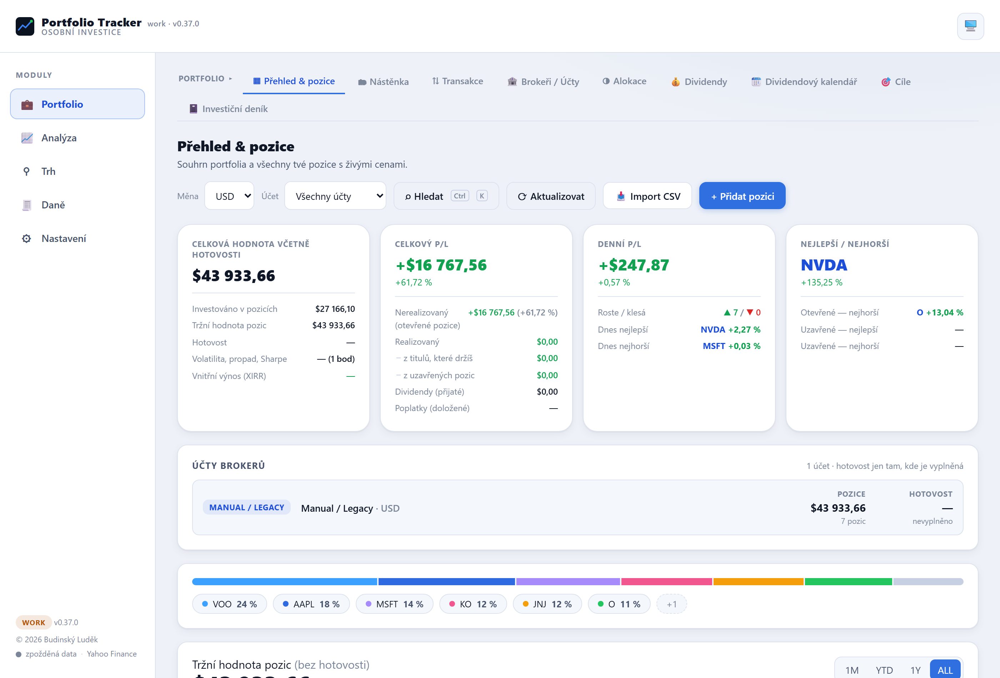
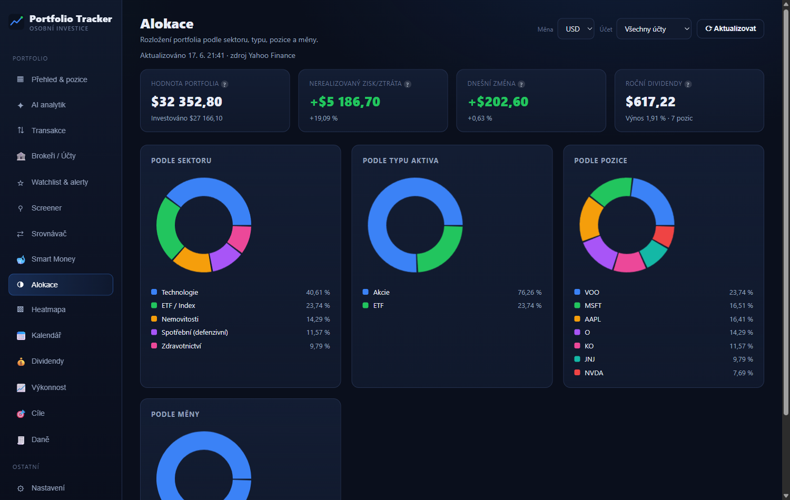
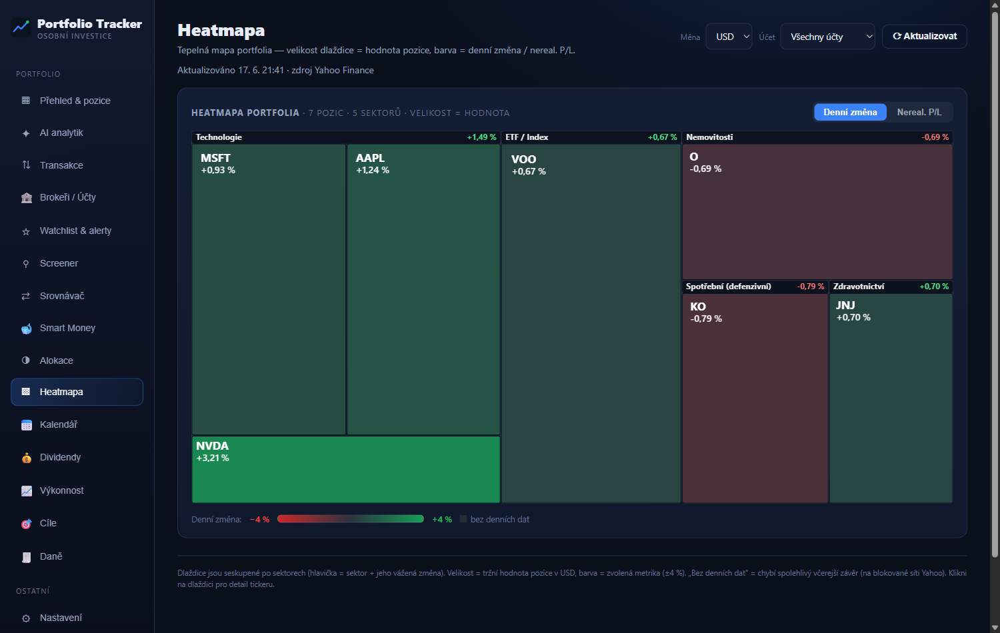
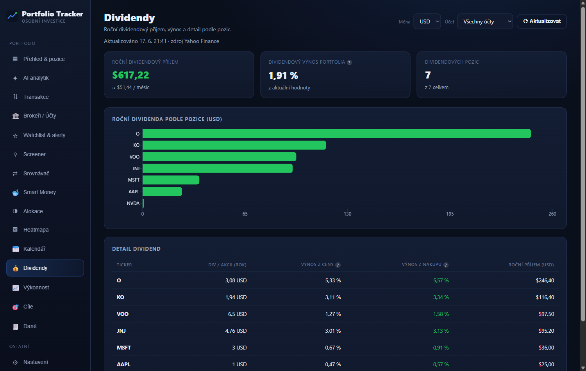
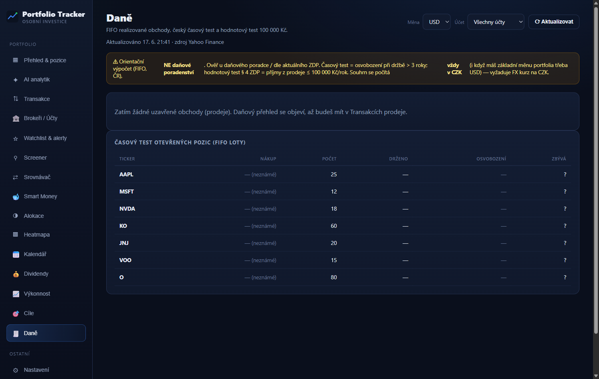

📊Portfolio Tracker
Vlastní tracker investičního portfolia, který běží celý jen u mě v prohlížeči. Eviduje pozice napříč brokery, počítá zisk/ztrátu, dividendy, daně a férovou hodnotu akcií — a ukazuje, jak si portfolio reálně vede. Žádný účet, žádný cloud, žádné sdílení mých pozic ven.
React TypeScript Vite Recharts localStorage (bez cloudu)
Co to dělá
Mám účetní knihu, která eviduje peníze, a analytika, který radí u jednotlivých akcií. Portfolio Tracker je třetí dílek: sleduje, jak si celé investiční portfolio vede v čase — na jednom místě, bez přihlašování kamkoliv. Inspiroval jsem se nástroji jako Digrin, ale postavil si vlastní, který nikam neposílá moje pozice.
Transakce jsou zdroj pravdy. Místo abych ručně psal „mám 10 akcií", aplikace si drží jednotlivé nákupy, prodeje a dividendy — a pozice, průměrnou cenu i realizovaný zisk si z nich sama odvodí (FIFO). Díky tomu sedí daně i historie.
Načte výpisy od brokerů sama. Přetáhnu CSV / XLSX / PDF z XTB, eToro, Trading 212 nebo Interactive Brokers, aplikace pozná brokera, normalizuje formát a opakovaný import nezduplikuje (otisk každé transakce). XTB účty si umí rozdělit podle měny (USD/EUR/CZK zvlášť).
Daně podle českých pravidel. FIFO párování prodejů, 3letý časový test (osvobození při dlouhé držbě) i hodnotový test § 4 (příjmy z prodeje ≤ 100 000 Kč/rok). Souhrn počítá vždy v korunách, i když mám portfolio třeba v dolarech (přepočet historickým kurzem k datu obchodu).
Výkonnost i férová hodnota. XIRR, CAGR, TWR, volatilita, Sharpe, graf hodnoty v čase a měsíční výnosy (rok × měsíc). U jednotlivých titulů pak 6 valuačních modelů (DCF, Graham, Lynch, DDM, EV/EBITDA, Multiples), screener s vlastním kompozitním skóre, sektorová heatmapa a kalendář výsledků (earnings).
Data z veřejných zdrojů, klíče jen u mě. Živé ceny z Yahoo Finance, fundamenty ze SEC EDGAR a Finnhubu, volitelný AI analytik přes Gemini. Případné API klíče zůstávají lokálně v prohlížeči — nikdy nejdou do kódu ani ven. Celá appka běží lokálně, žádný server moje pozice nevidí.
Klíčové funkce
- Pozice, P/L a alokace — přehled hodnoty portfolia, nerealizovaný i realizovaný zisk, rozložení podle sektoru, typu, pozice a měny, hlídání koncentrace.
- Import z 4 brokerů — XTB, eToro, Trading 212, Interactive Brokers (CSV/XLSX/PDF), idempotentní dedup, model broker → účet → transakce, rozdělení XTB podle měny.
- České daně (FIFO) — 3letý časový test i hodnotový test 100 000 Kč, přehled kolik dní zbývá k osvobození, export obchodů pro přiznání. Orientační, ne daňové poradenství.
- Výkonnost — XIRR, CAGR, TWR, volatilita, max drawdown, Sharpe, graf hodnoty v čase a měsíční výnosy (kapitálový zisk po měsících).
- Férová hodnota & screener — 6 valuačních modelů, přepínač modelu, vlastní kompozitní skóre, Beta a konsensus analytiků (Finnhub), P/E a Fwd P/E.
- Heatmapa, kalendář, AI analytik — sektorová tepelná mapa portfolia, kalendář výsledků a AI analytik (Gemini) nad daty portfolia — vše s upozorněním, že nejde o investiční doporučení.
- Bez účtu, bez cloudu, 47 testů — vše v prohlížeči (localStorage), data neopouštějí zařízení. Pod kapotou 47 automatických testů hlídá parsery a výpočty.
Náhledy





Náhledy jsou s ukázkovým (demo) portfoliem — skutečné pozice ani osobní finanční údaje na web nepatří.
Stav
Pracovní (work) verze v0.9.0 (červen 2026), 47 automatických testů. Lokální webová aplikace (Vite) — spouštím ji přes WebLauncher na svém PC. Soukromá, bez veřejného hostingu a bez instalátoru ke stažení — reálná data ani osobní údaje nejdou na web. Není to investiční doporučení ani poradenství, jen analytická a evidenční pomůcka pro mě.